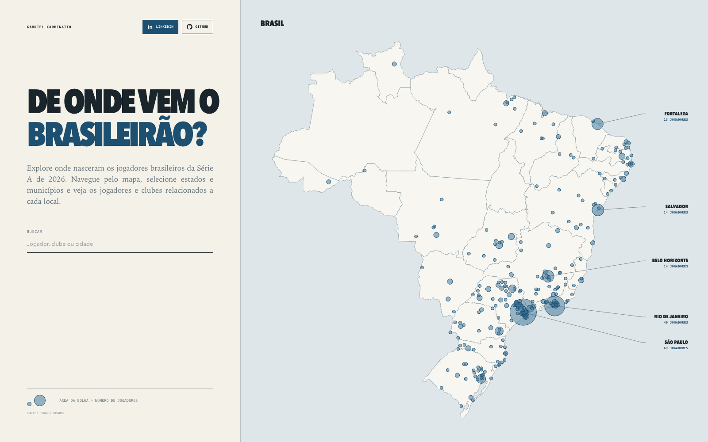
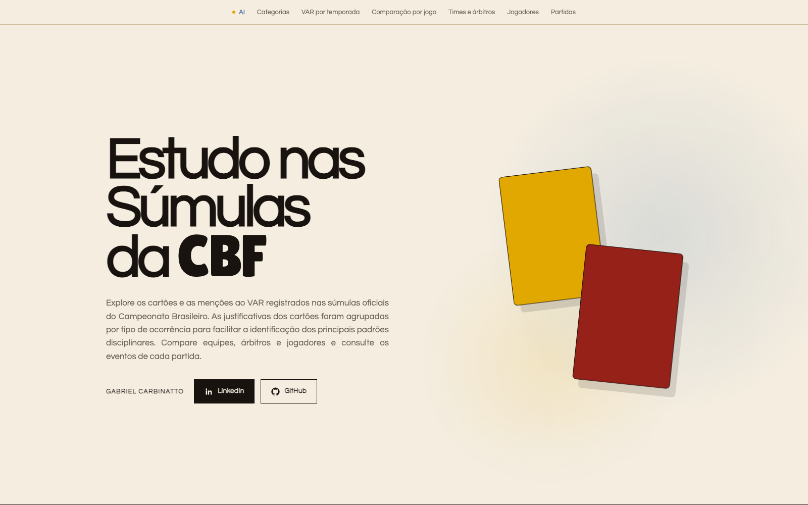
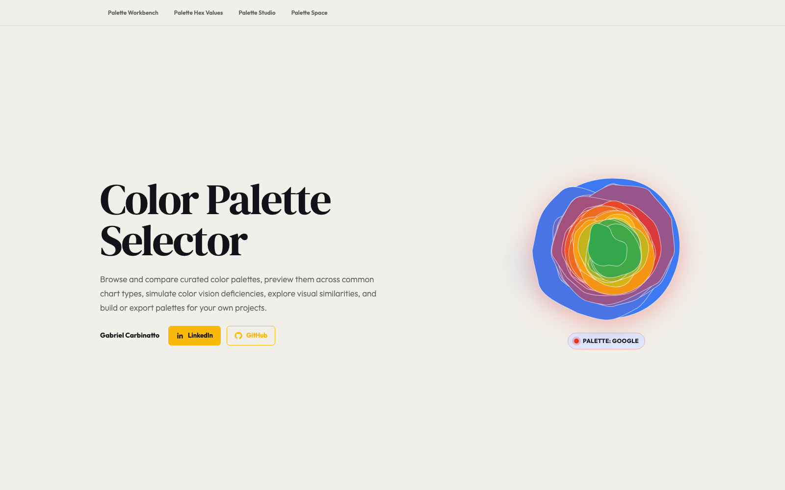
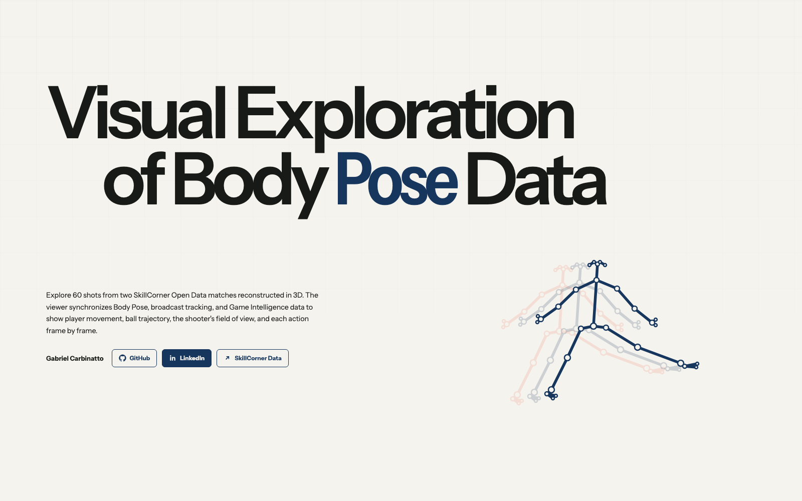
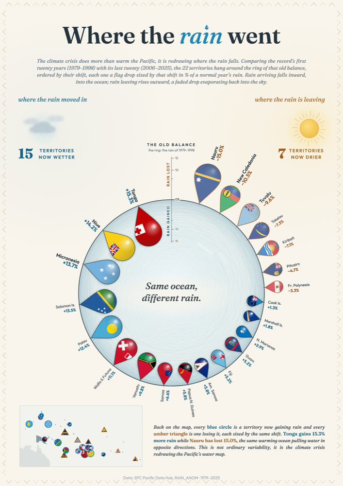
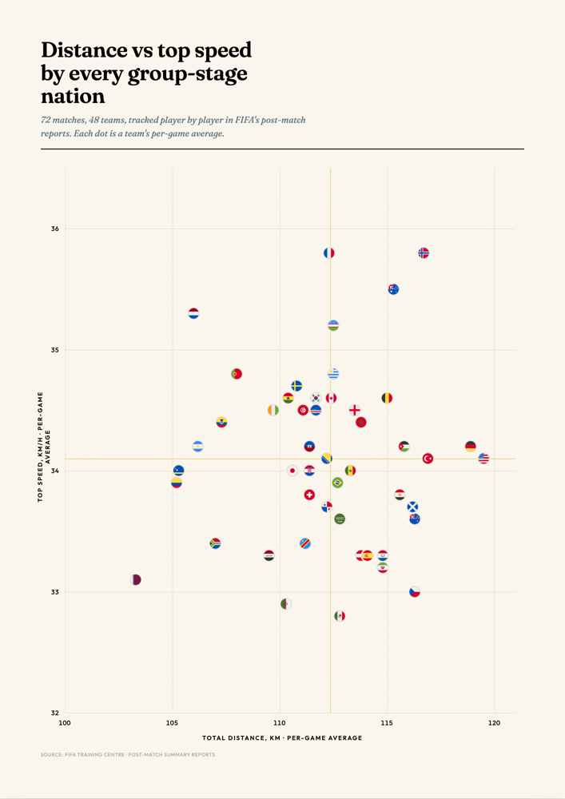

BSc, Statistics and Data Science
University of São Paulo.
Data analysis Data science Data visualization

I am a data analyst at Red Bull Bragantino, working across sports analytics, from data preparation and statistical modeling to communicating results. I hold a degree in Statistics and Data Science and am currently pursuing a master’s degree in Applied and Computational Mathematics, both at the University of São Paulo.
University of São Paulo.
University of São Paulo.
Prometrics.club.
Red Bull Bragantino.
Red Bull Bragantino.

Brazilian League Player Birthplaces Python · Pandas · D3.js
CBF Match Report Analysis Python · D3.js · Cloudflare Workers
Color Palette Selector JavaScript · SVG · Canvas
Visual Exploration of Body Pose Data Python · JavaScript · Three.js
Where the Rain Went Python · Pandas · SVG
Distance vs Top Speed at the 2026 World Cup Python · PyMuPDF · JavaScript